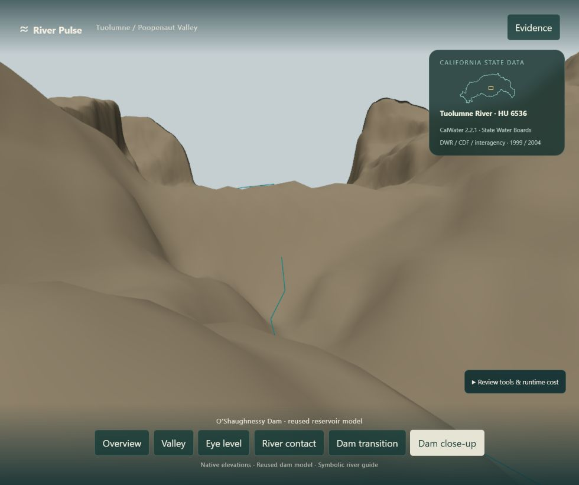
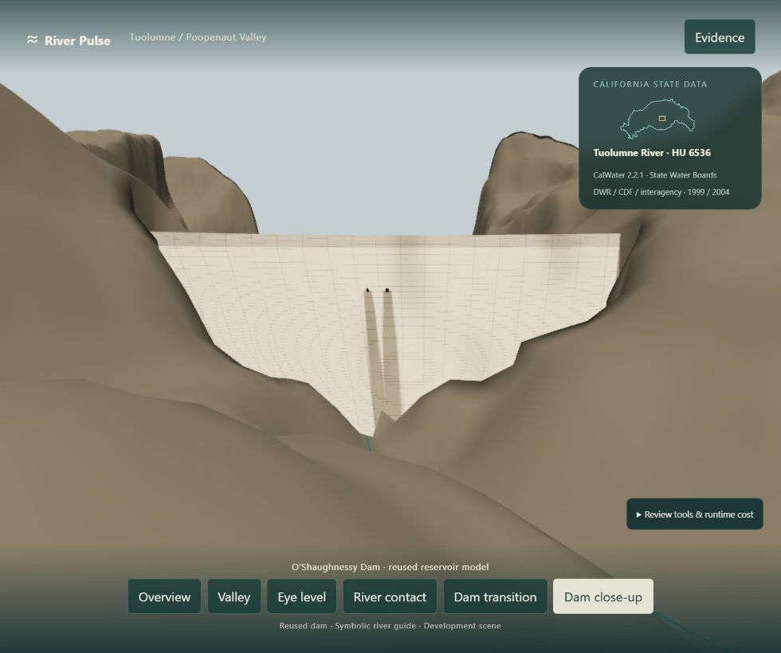
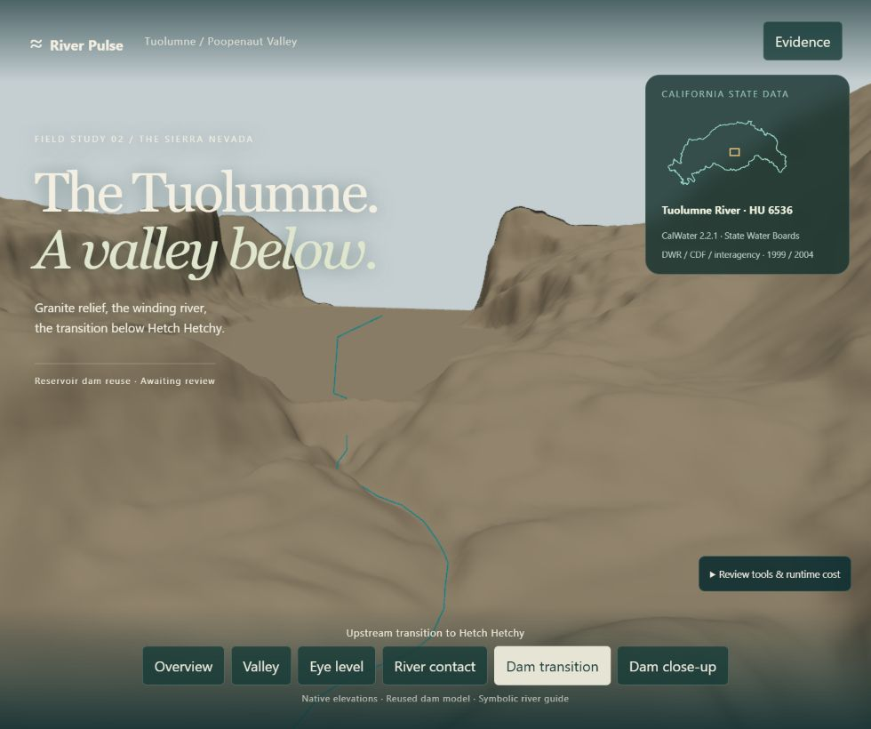
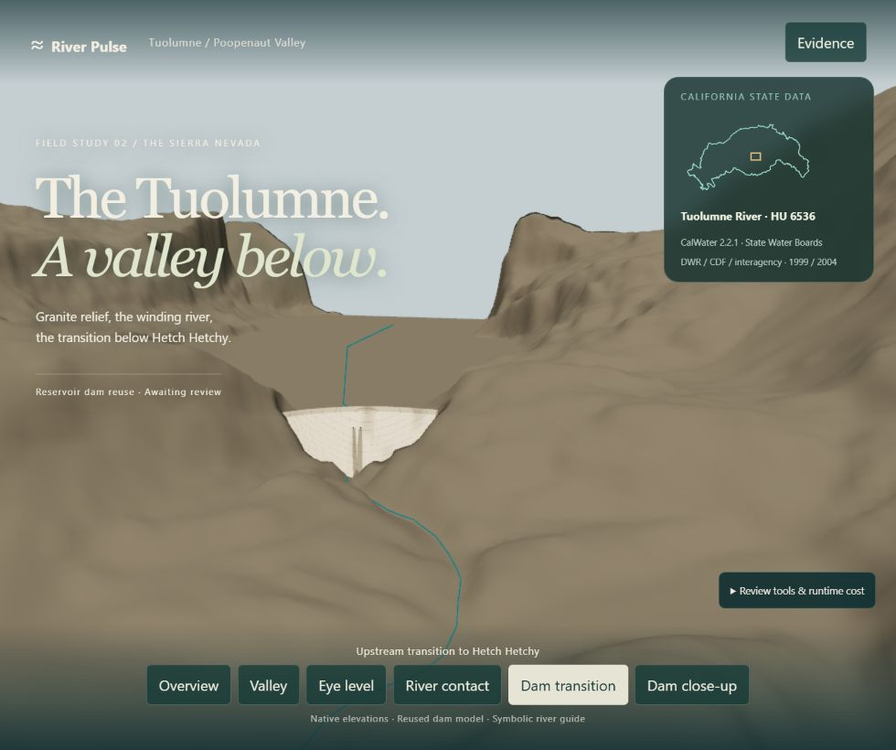
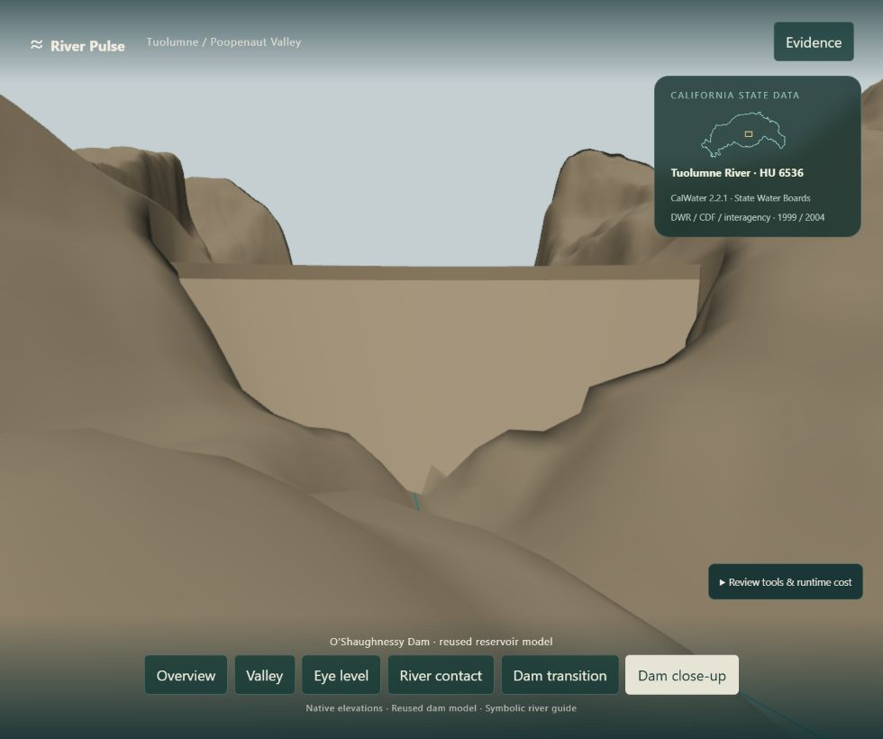
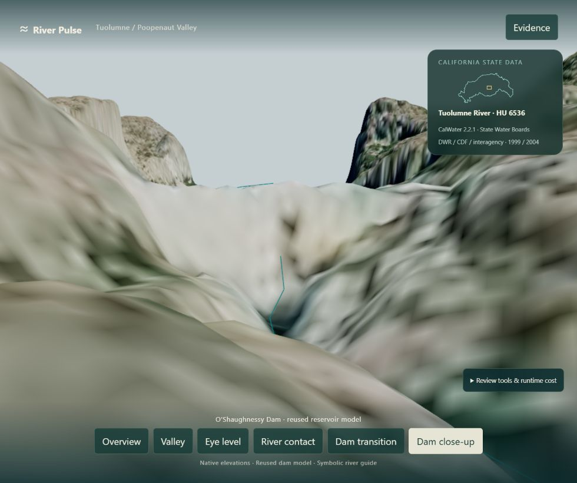
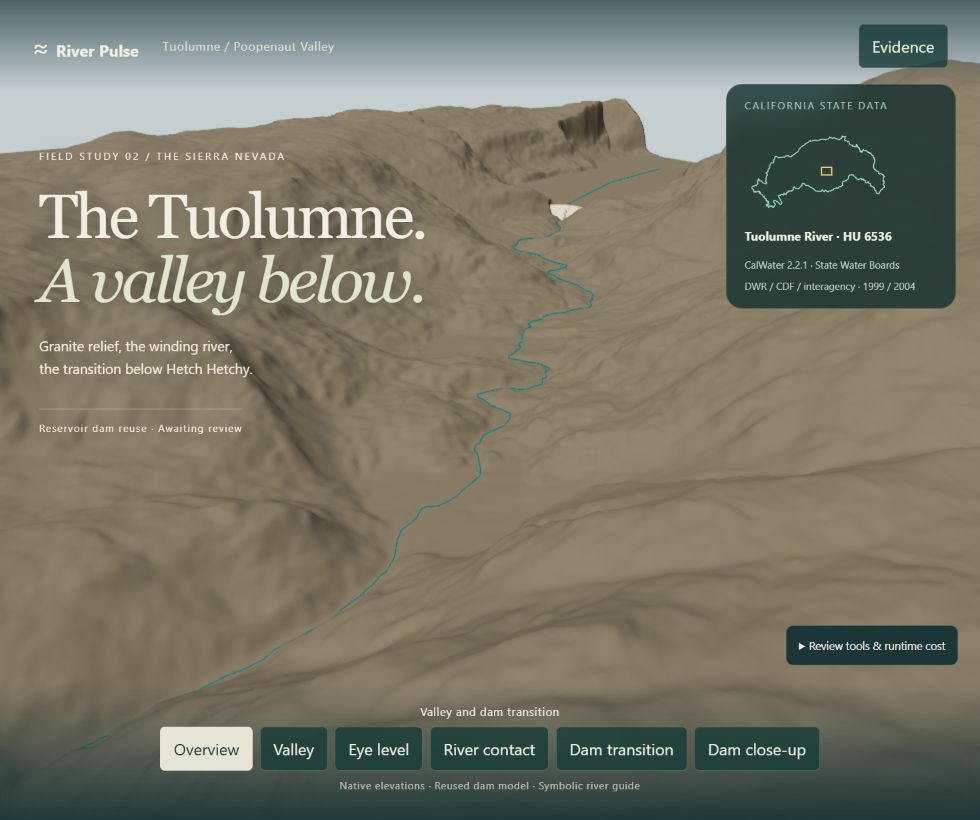
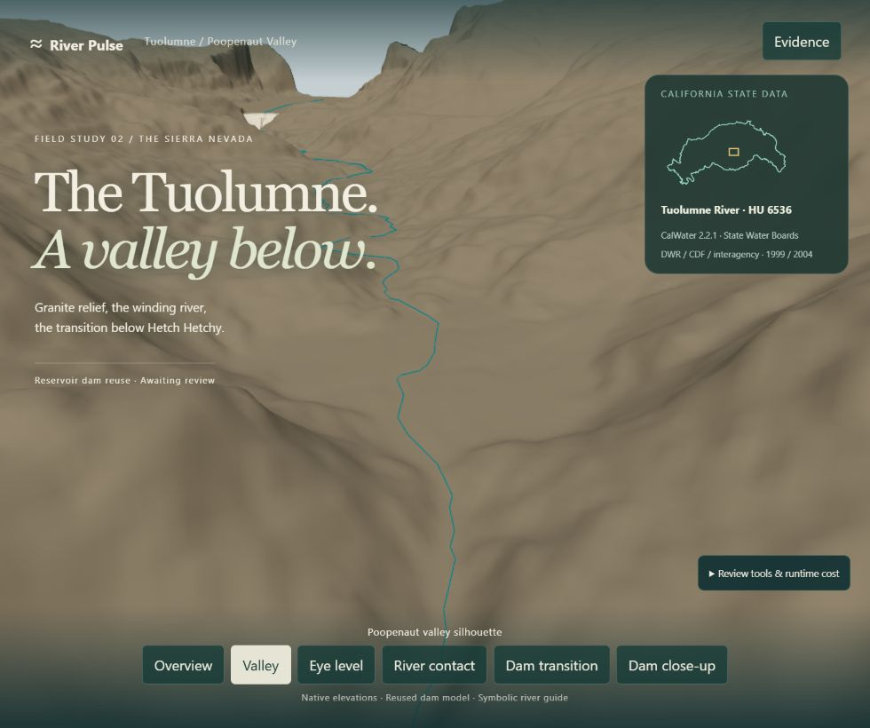
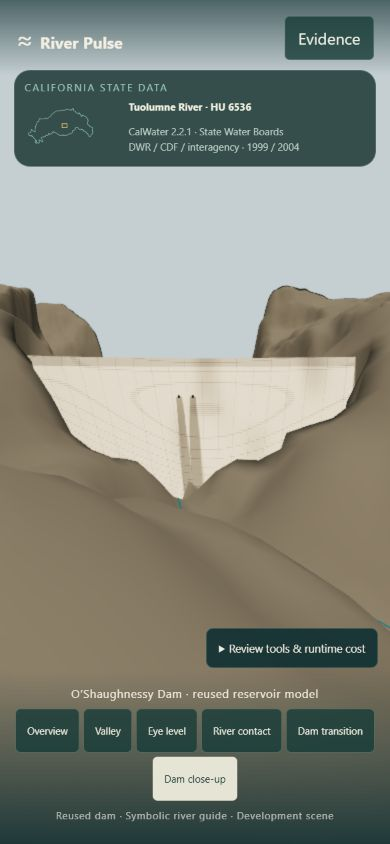
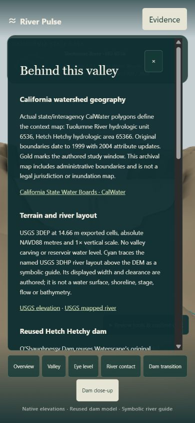

Actual River Pulse/browser renders. Original reservoir crest, profile and concrete material in the Tuolumne frame, at 1× scale. Authored contact cut clears the terrain smear only while the modeled dam is visible. Native source cells are retained. Awaiting human review.
Same close camera · Native baseline and reused dam

Native mesh, dam comparison toggle off. The survey blends the structure into the terrain.

Reused dam and bounded authored terrain clearance. Generic gravity profile, not as-built. Surrounding terrain remains coarse.
Same original transition camera

Original v3 transition camera: native baseline.

Same camera, dam visible. Original five camera positions are retained.
Form, source and broader reach

Plain form preserves the structure and disclosed contact cut without concrete surface detail.

Source aerial restores the native mesh and hides the 3D dam. Photograph is not modeled geometry.

Overview. Bare surroundings and symbolic river guide still need later passes.

Valley v3. Geographic relationship retained.
Phone review

390×844, 84° vertical FOV for the authored close camera. Crest fits; original phone cameras retained.

Evidence features actual California CalWater and separates native sources from the authored dam/contact treatment.
Same 980×820 close-camera cost samples, WebGPU, DPR ≈1: dam off 788,995 triangles / 3 draw calls; dam on 790,251 / 4. Resident CPU geometry 25.69 MiB and texture RGBA/mip estimate 13.33 MiB in both loaded-page samples. Compared with original RP21: +4.58 MiB CPU geometry and +5.33 MiB texture estimate. GPU execution/full memory and foreground FPS unmeasured. Static scene, no outlet jets or river water surface.